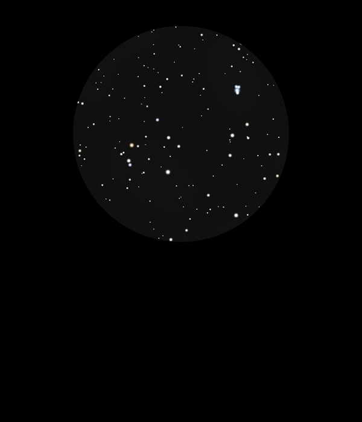

The Cygnus Rift
Dust Clouds in The Milky Way
Part of The Great Rift, or Dark Rift
26/08/16
The telescope went away as it clouded over but an hour or so
later the sky was clear and sharp
At midnight The Milky Way was relevantly clear and nearly
vertical
The Great Rift, a series of dust clouds which run through The
Milky Way, was clearly visible, especially in Cygnus where the
Cygnus Rift cuts down between Deneb, a Cyg, 50 Cyg, HIP 102098
and Sadr, y Cyg, 37 Cyg, HIP 100453 and then along through The
Milky Way towards Vulpecular, where the rift widens out